Pendahuluan
Salah satu ciri makhluk hidup adalah bergerak. Manusia sebagai makhluk hidup setiap saat bergerak, bahkan ketika tidur sekalipun. Kemampuan melakukan gerakan tubuh pada manusia di dukung oleh adanya sistem gerak. Dalam sistem gerak terjadi kerja sama antara rangka (tulang), persendian, dan otot. Di dalam perkembangannya, bentuk tulang, rangka, dan otot pada manusia bisa mengalami gangguan dan kelainan yang disebabkan oleh berbagai faktor.
Fungsi Rangka (Skeleton)
Rangka tubuh manusia tersusun dari 206 tulang yang saling berhubungan. Dimana fungsi dari rangka adalah sebagai berikut:
Alat gerak pasif
Memberi bentuk tubuh
Menyokong tubuh
Tempat melekatnya otot
Melindungi organ-organ tubuh bagian dalam
Tempat pembentukan sel darah merah
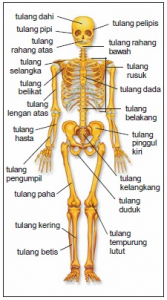
Gambar 1. Rangka tubuh manusia dan bagian-bagiannya
Sumber: https://dosenbiologi.com
Pengelompokkan Rangka
Secara garis besar, rangka pada tubuh manusia di kelompokkan menjadi rangka aksial (skeleton aksial) dan rangka apendikuler (skeleton apendikuler).
Rangka
Manusia
SAksi
S Apen
Rangka Aksial (Skeleton Aksial)
Terdiri atas sekelompok tulang yang menyusun poros tubuh dan memberikan dukungan dan perlindungan pada organ di kepala, leher dan badan.
Macam-macam rangka aksial
Tulang Terngkorak
Sebagian besar tersusun atas tulang-tulang yang pipih. Terdiri dari 22 buah tulang yang merupakan bagian dari tulang-tulang tempurung kepala dan wajah.
Tulang tempurung kepala, berfungsi melindungi otak, terdiri dari tulang:
Tulang dahi (frontal)
Tulang kepala Belakang (Osipital)
Tulang ubun-ubun (parietal)
Tulang Tulang pelipis (temporal)
Tulang baji (spenoid)
Tulang tapis (ethmoid)
Tl.
Tengkorak
Fraksi
Partai
Demokrat
Spenolong
Emid
Tulang wajah, berfungsi melindungi mata, membentuk rongga hidung serta langit-langit, dan memberi bentuk wajah. Tulang wajah terdiri dari tulang:
Tulang rahang atas (maksila)
Tulang rahang bawah (mandibula)
Tulang pipi (zigomatik)
Tulang air mata (lakrimal)
Tulang hidung (nasal)
Tl.
Wajah
Maksa
Mandi
Igo Lari Asal
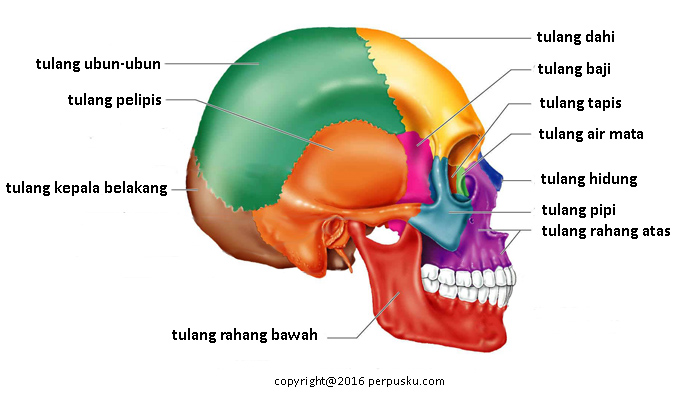
Gambar 2. Tulang tengkorak
Sumber: https://www.perpusku.com
Tulang Belakang
Tulang belakang berfungsi menopang seluruh bagian tubuh, melindungi bagian tubuh, melindungi organ dalam, serta tempat pelekatan tulang rusuk.Tulang belakang terdiri dari :
7 ruas tulang leher/belakang (vertebra servikalis);
12 ruas tulang punggung (vertebra dorsalis);
5 tulang pinggang (vertebra lumbalis),
Tulang kelangkang (sakrum) dan
Tulang ekor (koksi).
Tl.
Belakang
S
Vika Dan
Rsa
b
Lum
Bli S Krem Koko
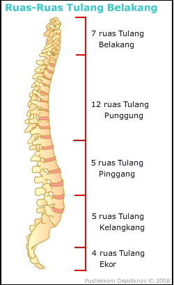
Gambar 3. Tulang belakang manusia
Sumber: https://leendarandallkhan.files.wordpress.com
Tulang dada dan tulang rusuk
Tulang dada terdiri atas tiga bagian, yaitu: hulu (manubrium), badan (korpus), dan taju pedang (xiphoid).
Tulang rusuk terdiri atas 12 pasang, yaitu: 7 pasang rusuk sejati, 3 pasang rusuk palsu, dan 2 pasang rusuk melayang
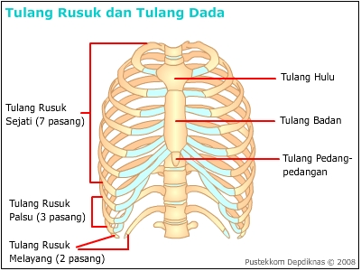
Gambar 4. Tulang dada dan tulang rusuk
Sumber: pustekkom depdiknas
Rangka Apendikuler (Skeleton Apendikuler)
Tersusun atas tulang yang merupakan tambahan rangka aksial.
Gelang Bahu
Tl Selangkang (klavikula) berbentuk huruf S
Tl belikat (skapula) berbentuk segitiga dan pipih
Bentuk Tulang Gelang Bahu Kla Ber SiKap Tga
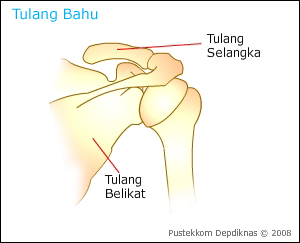
Gambar 5. Tulang gelang bahu
Sumber: pustekkom depdiknas
Gelang panggul
Berfungsi untuk mendukung berat badan bersama-sama dengan ruas tulang belakang, melindungi dan mendukung organ –organ bawah.
Gelang panggul terdiri atas:
Tl duduk (iscium)
Tl kemaluan (pubis)
Tl usus (illium)
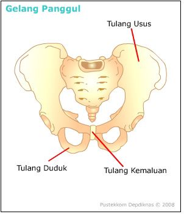
Gambar 6. Tulang gelang bahu
Sumber: pustekkom depdiknas
Gelang Panggul
IPI
Anggota gerak atas
Tl lengan atas (humerus)
Tlpengumpil (radius)
Tl hasta (ulna)
Tl pergelangan tangan (karpus)
Tl telapak tangan (metakarpus)
Tl jari tangan (palanges)
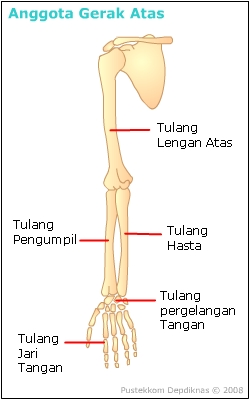
Gambar 7. Anggota gerak atas
Sumber : pustekkom depdiknas
Anggota Gerak Atas
Hobi HuRa2 Lna membuat KarTa Pusing Pala
Anggota gerak bawah
Tl paha (femur)
Tl betis (fibula)
Tl kering (tibia)
Tl tempurung lutut (patela)
Tl pergelangan kaki (tarsus)
Tl telapak kaki (metatarsus)
Tl jari kaki (palanges)
Anggota
Gerak Bawah
Lihat
Fenomena
Bulan
Tiba
d
Planet
Tarsus
dg
Mata
Pala sendiri
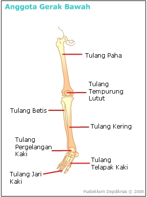
Gambar 8. Anggota gerak bawah
Sumber: pustekkom depdiknas
Bentuk Tulang
Tulang Pipa
Bentuk tulang ini panjang dan bulat dengan rongga di tengahnya seperti pipa.
Contohnya: tulang lengan, tulang paha, dan tulang betis
Tiga bagian tulang pipa, yaitu:
Diafise, terletak di bagian tengah tulang yang memanjang dan berongga
Metafise, terletak antara diafise dan epifise, dan memiliki kemampuan untuk tumbuh
Epifise, terletak di bagian ujung yang tersusun dari tulang rawan
Tulang pipih
Bentuk tulang ini pipih, terdiri atas lempengan tulang kompak dan spons.
Contohnya: tulang panggul, tulang tempurung kepala, dan tulang belikat.
Tulang pendek
Bentuk tulang ini pendek dan bulat
Contohnya: tulang pada telapak tangan dan kaki.
Tulang tak berarturan
Tulang dengan bentuk kompleks yang berhubungan dengan fungsi khusus.
Contohnya: tulang rahang, dan ruas-ruas tulang belakang
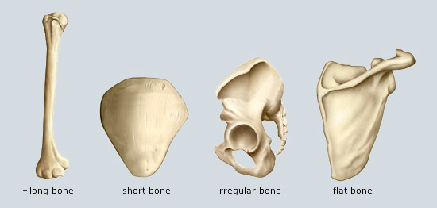
Gambar 9. Contoh-contoh bentuk tulang
Sumber: https://medwrite.biz/51525_long_bones_in_human_body_images/
Jenis Tulang
Bersadarkan zat penyusunnya, tulang dibedakan menjadi tulang keras (osteon) dan tulang rawan (kartilago).
Jenis
Tulang
KOs
RaKa
Tulang Keras (osteon)
Bersifat keras dan kaku
Tersusun atas sel-sel tulang (osteosit) dan matriks yang terdiri dari senyawa kalsium dan fosfat.
Tulang Rawan (Kartilago)
Bersifat lentur
Mengandung banyak zat perekat dan sedikit zat kapur
Tersusun atas sel-sel tulang rawan (kondrosit) dan matriks.
Tulang rawan dibagi menjadi tiga, yaitu:
Hialin, bewarna putih bebiruan dan licin. Terdapat pada sendi gerak, ujung tulang rusuk, saluran pernafsan, serta rangka embrio sebelum jadi tulang keras
Elastis, bewarna buram kekuningan, bersifat fleksibel dan elastis. Terdapat pada telinga luar dan epiglotis
Fibrosa, bewarna buram keputihan, bersifat keras. Terdapat pada ruas-ruas tulang belakang.
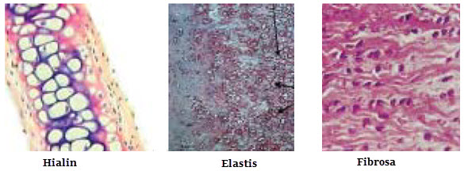
Gambar 10. Macam-macam tulang rawan
Sumber:http://hoethealth.blogspot.com
Pengertian Sendi
Sendi adalah adalah hubungan antar tulang sehinnga tulang mampu untuk bergerak.
Macam-Macam Sendi
Sinartrosis
Tidak memungkinkan terjadinya gerakan.
Terbagi dua:
Sinartrosis Sinfibrosis, tulangnya dihubungkan jaringan ikat fibrosa, contohnya pada persendian tulang tengkorak
Sinartrosis Sinkondrosis, dihubungkan oleh tulang rawan, contohnya, hubungan antar tulang rusuk dan tulang dada
Diartosis
Memungkinkan terjadinya gerakan
Terbagi atas :
Sendi Engsel: gerakan satu arah seperti tulang lengan atas dan tulang hasta
Sendi putar:gerakan berputar, seperti tulang tengkorak dengan tulang atlas
Sendi peluru: gerakan ke segala arah, seperti tulang lengan atas dan tulang belikat
Sendi pelana: gerakan berputar tetapi tidak segala arah, seperti hubungan tulang telapak tangan dan jari tangan
Sendi luncur: gerakan rotasi pada suatu bidang datar, sepertihubungan tulang pergelangan kaki
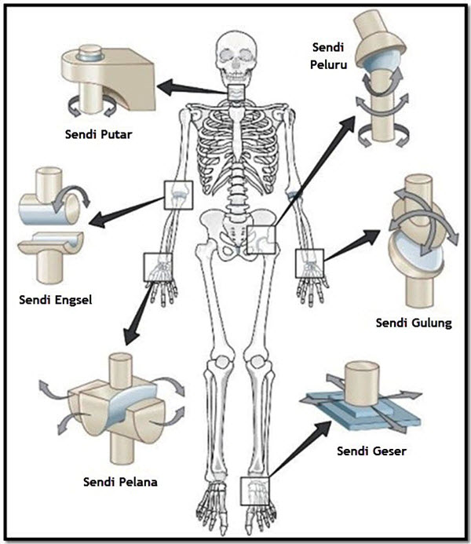
Gambar 11. Beberapa sendi diartosis
Sumber: https://sehatafiat.com
Amfiartosis
Memungkinkan terjadinya sedikit gerakan
Terbagi atas:
Sindesmosis: seperti persendian antara fibula dan tibia
Simfisis: seperti hubungan anta ruas-ruas tulang belakang
Macam-Macam Sendi
1. Sinartrosis
Sinfibrosis - Sinkondrosis
2. Diartotosis
Engsel – Putar – Peluru – Pelana – Luncur
3. Amfiartosis
Sindesmosis – Simfisis
Otot
Otot adalah kumpulan sel otot yang membentuk jaringan yang berfungsi menyelenggarakan gerakan organ tubuh. Otot adalah alat gerak aktif.
Macam-Macam Otot
Berdasarkan bentuk dan cara kerjanya, otot di bedakan menjadi tiga macam, yaitu otot polos, otot lurik dan otot rangka
|
Pemdeda |
Otot Polos |
Otot Lurik |
Otot Jantung |
|
Bentuk |
Ujung runcing, gelendong |
Silindris, memanjang |
Silindris memanjang bercabang |
|
Jumlah Inti Sel |
Satu |
Banyak |
Lebih dari satu |
|
Letak inti sel |
Di tengah sel |
Di tepi sel |
Di pusat sel |
|
Sistem Kerja |
Involunter |
Volunter |
Involunter |
|
Reaksi |
lambat |
cepat |
Lambat |
|
Gerakan |
Tidak cepat lelah |
Cepat lelah |
Tidak cepat lelah |
|
Letak |
Sistem organ |
Melekat pada rangka |
Jantung |
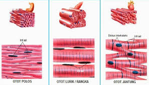
Gambar 12. Macam-macam otot
Sumber: https://www.perpusku.com
Mekanisme Kerja Otot
Otot bekerja dengan dua cara, yaitu berkontraksi dan relaksasi.
Saat rangsangan sampai ke sel otot, mempengaruhi asetilkolin
Asetilkolin melepaskan ion kalsium yang berada di antara sel otot
Ion kalsium masuk ke otot membawa troponin dan tropomiosin ke aktin
Aktin mendekati miosin dan bertempelan
Serabut otot memendek dan otot berkontraksi
Ion kalsium masuk kembali ke plasma sel
Ikatan troponin dan ion kalsium lepas
Pelekatan aktin dan miosin lepas
Otot berelaksasi
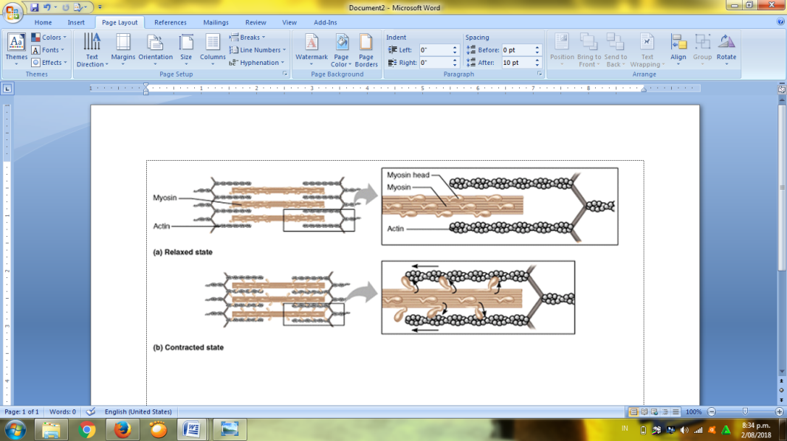
Gambar 13. Kontraksi dan relaksasi otot
Sumber: http://ilmuveteriner.com
Sifat Kerja Otot
Otot Sinergis
Dua otot atau lebih yang bekerja bersama-sama dengan tujuan yang sama.
Contoh: otot-otot antara tulang rusuk bekerja bersama-sama saat bernafas.
Otot Antagonis
Dua otot atau lebih yang kerjanya berlawanan. Satu berkontraksi satu berelaksasi.
Gerak yang muncul akibat otot antagonis, yaitu:
Fleksi dan Ekstensi
Fleksi = gerak menekuk
Ekstensi = gerak meluruskan
Contoh, gerak pada siku, lutut, dan ruas-ruas jari
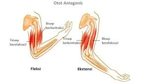
Gambar 13. Gerak fleksi dan ekstensi
Sumber: https://malekbio.blogspot.com
Adduksi dan Abduksi
Adduksi = gerak mendekati tubuh
Abduksi = gerak menjauhi tubuh
Contoh,
gerak mengacungkan tangan
Adek
Mendekat, Abang
Menjauh
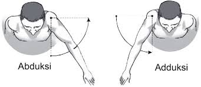
Gambar 14. Gerak adduksi dan abduksi
Sumber: http://adibatur9a.blogspot.com
Elevasi dan Depresi
Elevasi = gerak mengangkat
Depresi = gerak menurunkan
Contoh , gerak membuka dan menutup mulut
Supinasi dan Pronasi
Supinasi = menengadahkan tangan
Pronasi = menelungkuppkan tangan
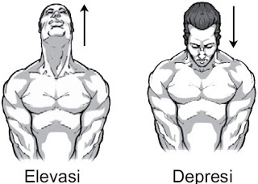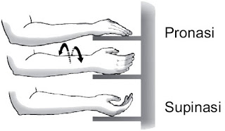
Gambar 15. Gerak elevasi, depresi, supinasi dan pronasi
Sumber: http://adibatur9a.blogspot.com
Gangguan pada Rangka (Tulang)
Patah tulang (Fraktura)
Patah tulang bisa disebabkan oleh kecelakaan, jatuh, atau lainnya.
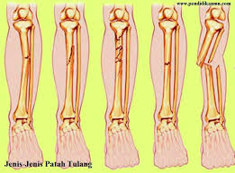
Gambar 16. Fraktura pada kaki
Sumber: https://nationdeveloper.wordpress.com
Rakhitis
Penyakit tulang yang disebabkan kekurang vitamin D sehingga kaki berbentuk “O” atau “X”.
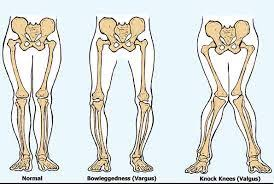
Gambar 17. Bentuk kaki normal, “O”, dan “X”
Sumber: http://www.artikelmateri.com
Mikrosefalus
Kepala berukuran kecil karena gangguan pertumbuhan tulang tengkorak.
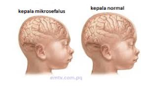
Gambar 17. Anak yang menderita mikrosefalus
Sumber: http://www.ariskelana.com
Osteoporosis
Gangguan tulang dengan gejala penurunan masa tulang sehingga tulang rapuh.
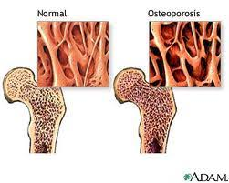
Gambar 18. Tulang yang mengalami osteoporosis
Sumber: http://www.zbma.com
Kifosis
Tulang punggung membengkok ke arah depan
Skoliosis
Tulang punggung membengkok ke arah samping
Lordosis
Tulang punggung membengkok ke arah belakang
Gambar 19. Gangguan pada ruas-ruas tulang belakang
Sumber: http://www.pelajar.com
Gangguan pada Sendi
Dislokasi
Terjadi karena pergeseran tulang penyusun sendi dari posisi semula.
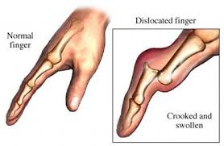
Gambar 20. Dislokasi pada tangan
Sumber: http:// www.flexfreeclinic.com
Terkilir
Tertarikknya ligamen sendi karena gerakan tiba-tiba
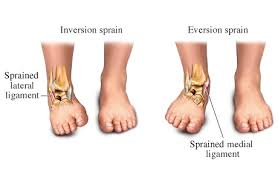
Gambar 21. Terkilir pada kaki
Sumber: http:// www. Jerryderiskwordpress.com
Artritis
Gangguan yang disebabkan adanya peradangan pada sendi.
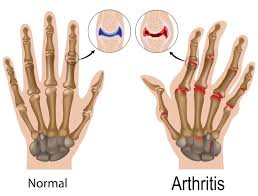
Gambar 22. Tangan arthritis
Sumber: http://pharmakologi.blogspot.com
Gangguan pada Otot
Atrofi
Penurunan fungsi otot karena otot mengecil atau kehilangan kemampuan berkontraksi.
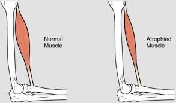
Gambar 23. Kaki yang mengalami atrofi
Sumber: http://variasidunia.blogspot.com
Hipertrofi
Otot yang berkembang menjadi lebih besar dan kuat.

Gambar 24. Orang dengan otot hipertrofi
Sumber: http://variasidunia.blogspot.com
Tetanus
Kondisi ketegangan otot yang terus menerus karena terinfeksi oleh bakteri Clostridium.
Distrofi otot
Penyakit kronis yang menyebabkan gangguan gerak. Disebabkan oleh cacat genetik